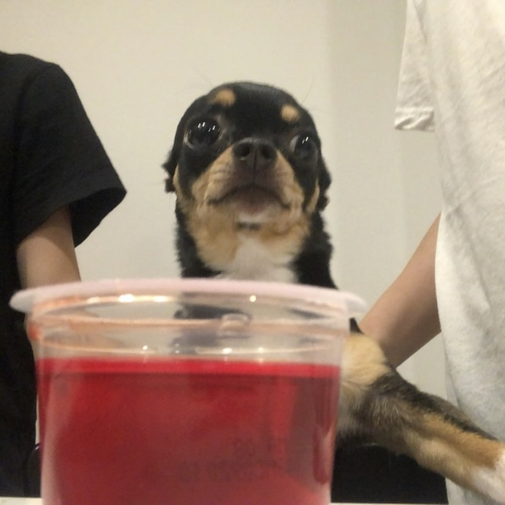
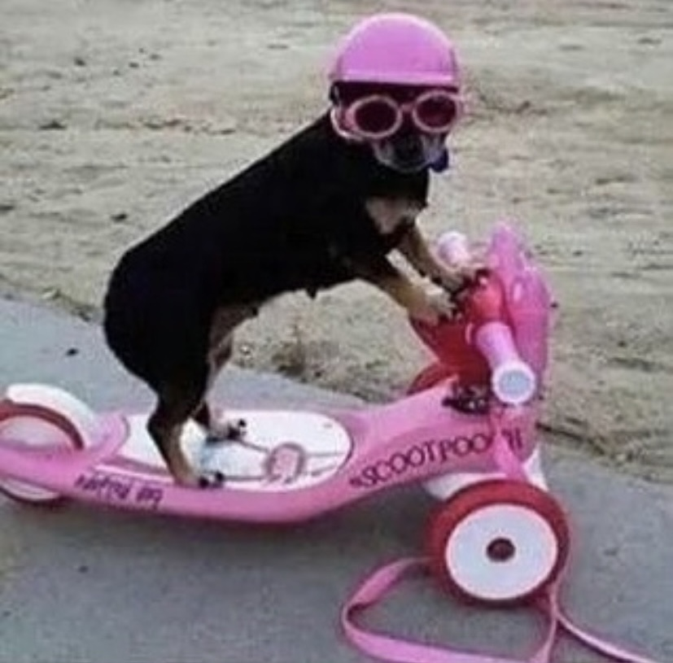
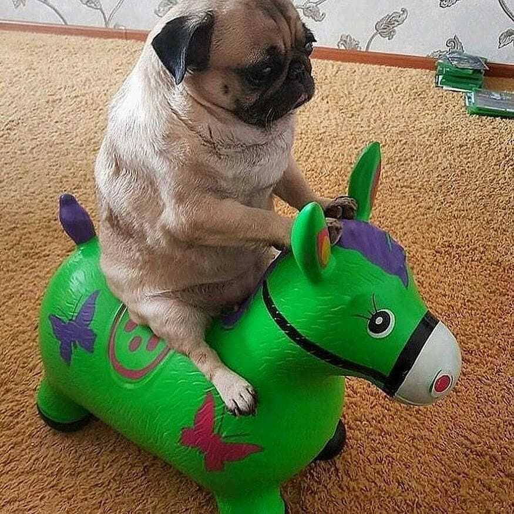

CAREFOR PAWS
Home
Browse Available Pet
Find a dog/cat
Dog Care
Cat Care
Have a pet to give away?
Contact Us
Dog Care



PETA - Dog Care 101
VCA - Wounded Dog (What to do?)
Merrick - Show Your Dog Love